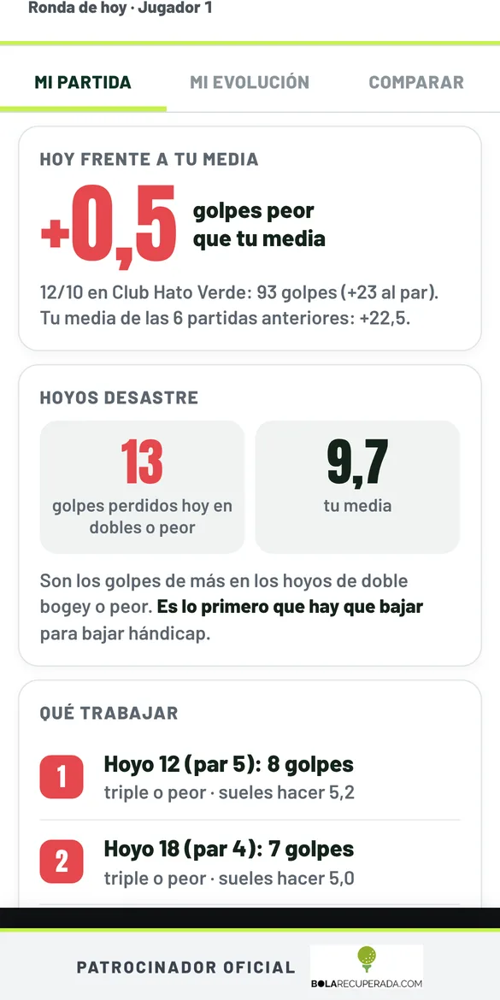
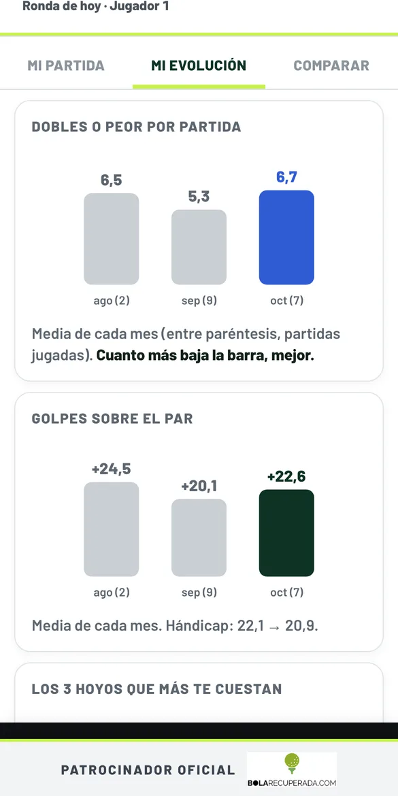

La app de golf gratis para jugar con tus amigos
Apunta la tarjeta hoyo a hoyo desde el móvil. acgolf calcula el hándicap, los puntos Stableford y la clasificación del grupo, y lleva vuestra liga de todo el año.
Entrar en acgolf Cómo instalarlaTodo lo que necesita un grupo de golf
Tarjeta en el móvil
Golpes hoyo a hoyo, con el par, el índice de dificultad y los golpes de hándicap que recibes en cada hoyo.
Hándicap y Stableford
Calcula el hándicap de juego según las barras, el resultado neto y los puntos Stableford de cada jugador.
Clasificación en directo
Cada uno sigue la partida desde su móvil y la clasificación se actualiza al momento.
Liga del grupo
Ranking de la temporada, ganador de la semana y el historial de todas vuestras partidas.
Organizar partidos
Elige día, campo y horas de salida, apúntate y avisa a todos por WhatsApp con un botón.
¿Cómo jugué?
Gráficas sencillas de tu partida y de tu evolución, y comparación con cualquier compañero.
Así se ve en el móvil


Curro, tu caddie andaluz

Cuando todos han apuntado el hoyo, Curro sale en pantalla y comenta con mucha guasa el mejor y el peor resultado. Habla con voz, y se puede silenciar.
«Doble bogey. Esto en Sevilla lo llamamos calentar motores.»
Cómo empezar en un minuto
- Abre acgolf.es en el navegador del móvil. No hay que descargar nada de ninguna tienda.
- Crea tu cuenta con tu correo y elige o crea tu grupo de amigos.
- Pulsa «Crear partida», elige el campo y los jugadores, y apunta los golpes en cada hoyo.
- Si quieres, añádela a la pantalla de inicio y se abrirá como cualquier otra aplicación (ver cómo).
Campos de golf incluidos
Con sus barras de salida, course rating y slope. Para otros campos de España hay un buscador dentro de la app.
- Club Hato Verde (Sevilla)
- Club Zaudín Golf (Sevilla)
- Real Club de Golf Sevilla
- Real Club Pineda (Sevilla)
- Las Minas Golf (Sevilla)
- La Cartuja (Sevilla)
- La Monacilla Golf Club (Huelva)
- Corta Atalaya Golf (Huelva)
- Bellavista Huelva Golf Club
- Golf Nuevo Portil (Huelva)
- Golf El Rompido, Norte y Sur (Huelva)
- Islantilla Golf Resort (Huelva)
- Isla Canela, Links y Old Course (Huelva)
- Real Club Valderrama (Cádiz)
- Real Club de Golf Sotogrande (Cádiz)
- La Reserva Club Sotogrande (Cádiz)
- San Roque Club (Cádiz)
- La Hacienda Alcaidesa, Links y Heathland (Cádiz)
- Montecastillo Golf (Jerez)
- Sherry Golf Jerez
- Real Club de Golf Vista Hermosa (El Puerto)
- Costa Ballena Ocean Golf (Rota)
- Novo Sancti Petri (Chiclana)
- Villanueva Golf (Puerto Real)
- Montenmedio Golf (Vejer)
- Benalup Golf & Country Club
- Arcos Gardens Golf
Preguntas frecuentes
¿acgolf es gratis?
Sí. acgolf es gratis y no hace falta descargarla de ninguna tienda: se abre en el navegador del móvil, en acgolf.es, y se puede añadir a la pantalla de inicio.
¿Calcula el hándicap de juego y los puntos Stableford?
Sí. Con tu hándicap y las barras de salida, acgolf calcula los golpes que recibes en cada hoyo, el resultado neto y los puntos Stableford de cada jugador.
¿Pueden apuntar los golpes varios jugadores a la vez?
Sí. Cada jugador puede seguir la partida desde su móvil y la clasificación se actualiza al momento para todo el grupo.
¿En qué campos de golf funciona?
Trae los campos de Sevilla, Huelva y Cádiz con sus barras, rating y slope, y un buscador para encontrar otros campos de España.
¿Quién es Curro?
Curro es el caddie andaluz de acgolf: cuando todos han apuntado el hoyo, sale en pantalla y comenta con gracia el mejor y el peor resultado.